木次町の桜まつりの花火（2019）
更新日 : 2019/04/06
今日は暖かく、花見も花火も快適でした。
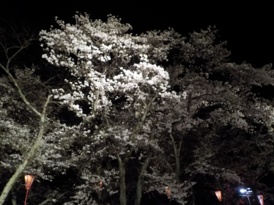
なんとなく桜が減ったかな?。屋台とライトアップの照明も減った気がする。
人工的な明かりが減って落ち着いた感じになったのはいいですね。
駅や近くのスーパーは出店が多くなったり、イベントやってて賑やかでした。分散したみたいです。
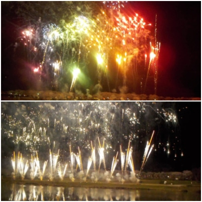
15分くらい花火がありました。桜バックに広がる花火は幻想的でした。
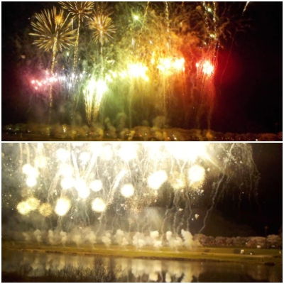
今回は例年より花火が派手な気がしました。
先週がおまつりでしたが、木次土手の桜は満開でした。（2017）
更新日 : 2017/04/08
近頃毎年、木次の桜を見ています。
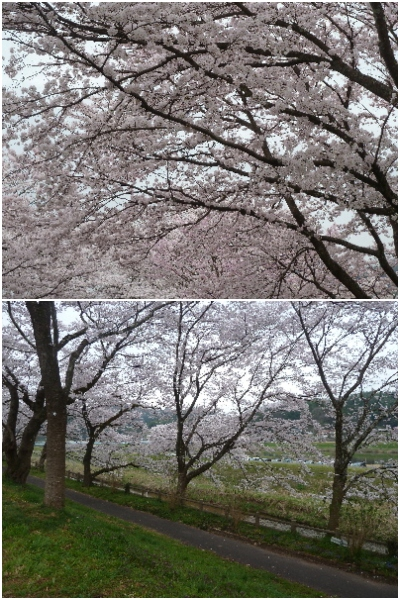
色々名所はありますが、ここが一番いごこちがいい気がする。
先週がお祭りでしたが、今年は桜が咲くのが遅かったので今日が満開でした。
お祭りをやっていないせいか、人が写らない道の写真も撮れました。夕方の明るいうちは少し空いていました。
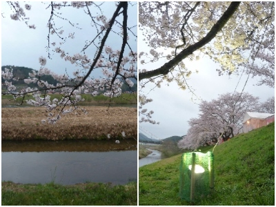
桜の下に座ってのんびり桜鑑賞です。
19時を過ぎたくらいからライトアップが始まりました。
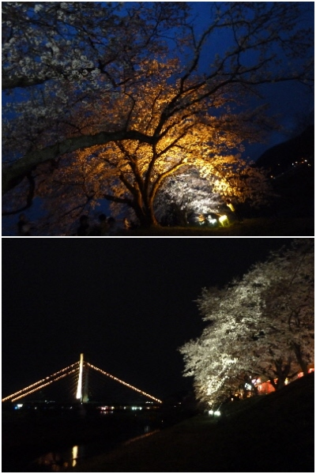
ライトアップ綺麗ですね。
だんだん暗くなっていく空と桜見を、のんびり鑑賞しました。
花火なしで、静かに見るのもいいですね。
今年も木次で桜と花火を見ました。（2016）
更新日 : 2016/04/02
木次で夜桜見物です。
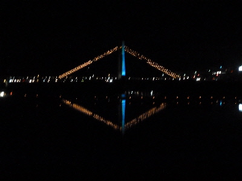
木次の夜といえばこの橋ですよね。お客さん多くて、花火前は付近は渋滞していました。
桜土手も人でいっぱい。屋台は長い行列でした。行くなら早い時間から行った方がいいかな。
今日はいい天気で気温もそこそこあったので、快適に花火がみれました。
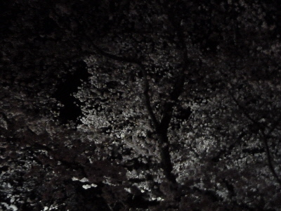
夜桜を見ましたが、ライトアップが少ない方が桜が綺麗だなーなんて思いました。
木次の桜まつりで花火を見ました。（2015）
更新日 : 2015/04/04
桜まつりの花火を見に行きました。
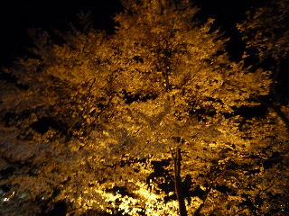
ライトアップされた桜です。私は日の光に当たった桜の方が好きだな。もしくはボンボリくらいの照明の方が好きだ。
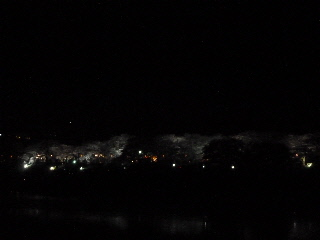
川の対岸から見たらこんな感じです。白いライトが多いので、賑やかな感じはしないですね。
花火も桜の木の下じゃなくて、川の対岸から見ました。見晴らしが良いので、花火が綺麗でした。
でも途中で雨が降ってきたので、傘を差しながら見ました。雨でも花火は綺麗に見れました。
木次で花馬車に乗りました。（2014）
更新日 : 2014/04/07
今日は桜が満開でした。桜のイベントって事で、花馬車が走っていました。
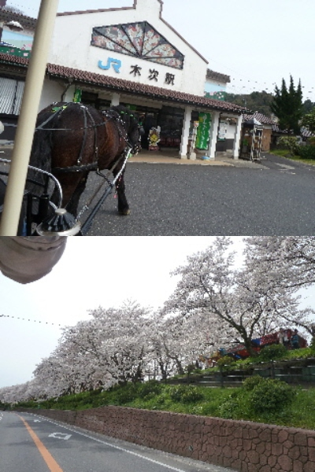
木次駅から出発です。馬車で車道を走りながら、桜の花見が出来ました。
馬車から見た桜はこんな感じです。普通に花見してる人に「馬車だ！」って見られて、ちょっと恥ずかしかったです。
椅子に座って、のんびり花見が出来ました。馬車に乗ることってそんなにないので、いい思い出になりました。
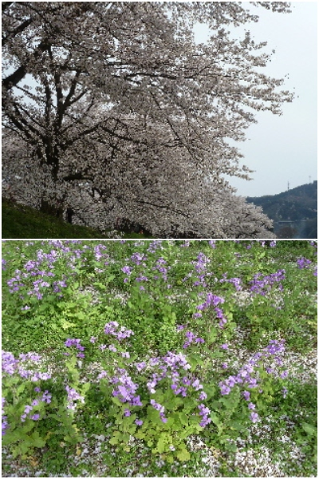
馬車の後は、普通に土手を散歩しました。綺麗でした。
土手の花壇で花が咲いていました。花びらが沢山落ちてて、こっちも綺麗です。
木次の桜は見頃でした。（2012）
更新日 : 2012/04/14
木次町の斐伊川堤防桜並木に行きました。
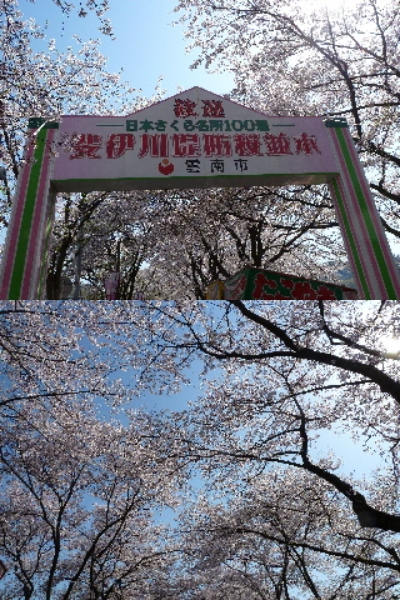
天気が良かったので、いい花見が出来ました。たぶん満開です。
写真が小さくてあんまりですが、綺麗な空と桜を見てると気分が良くなりました。
桜の花びらが、上からひらひら落ちてきていました。たぶん今が見ごろなんでしょうね。いい休日にんりました。